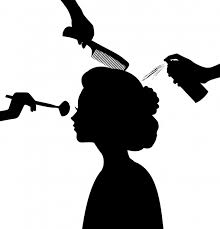

services we give include
GIVE AWAYS FOR OUR PERMANENT COUSTEMERS EVERY MONTH
Haircuts and Styling
The most basic service a hair salon should offer are haircuts for men, women, and children. While some salons specialize in certain areas, it is expected that the beauticians will be able to cut all types of hair.
Hair Coloring
Hair coloring is one of the most popular services offered at a hair salon. Because home hair coloring can go wrong in so many different ways and box colors are not healthy for hair, most people go to salons to get their hair professionally colored.
Hair Extensions
Hair extensions have grown considerably in popularity over recent years as long hair has become more fashionable again.
Formal Hair Styling
Hair salons also specialize in formal hairstyling for weddings, proms, and other formal events.
Formal hairstyling often includes curling and teasing for the perfect up-do that won’t fall apart on the dance floor.
>Perms and Relaxers
While not as popular as they once were, permanents and relaxing are style services salons are expected to offer.
tweezing eyebrow hair,this technique hails from india and is a variant to removing facial and eyebrow hair.
strengthning treatment
deep conditioning treatments
hair extension services-types of extensions include temporary clip-in or halos,tape-in, hand-tied or sewn, and fusion.